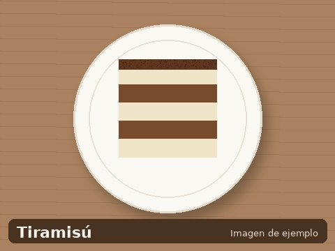

Tiramisú
- 6 porciones
- 30 minutos + 4 horas de frío
- Dificultad: media

Un postre italiano que conquistó el mundo y las cocinas chilenas. Cremoso, con sabor a café y cacao, es el cierre perfecto para cualquier comida especial. Se prepara con anticipación, así que es ideal para recibir visitas.
Ingredientes (6 porciones)
- 250 g de queso mascarpone
- 3 huevos
- 80 g de azúcar
- 200 g de galletas tipo vainilla o savoiardi
- 1 taza de café expreso frío
- 2 cucharadas de cacao en polvo sin azúcar
- 50 ml de licor (opcional)
Preparación
- Separar las claras de las yemas.
- Batir las yemas con el azúcar hasta obtener una crema pálida.
- Incorporar el mascarpone y mezclar suavemente.
- Batir las claras a punto de nieve e incorporar a la mezcla.
- Mojar las galletas en el café frío.
- Disponer una capa de galletas en el molde y cubrir con crema.
- Repetir las capas y terminar con crema.
- Refrigerar mínimo 4 horas. Espolvorear cacao antes de servir.